Ebrey on the appeal of Buddhism
“In a rough and tumultuous age, Buddhism offered an appealing emphasis on kindness, charity, the preservation of life, and the prospect of salvation.”
Ebrey & Walthall, Pre-Modern East Asia, p. 70.
Dunhuang · explore the cave paintings 538–539 → Tang → 868
Buddhism offers liberation from suffering and rebirth, and a community organized around that goal. In China and Korea, it creates new claims on people’s loyalties, labor, and wealth—alongside those of family and ruler.
The political setting changes; older ethical traditions and elite culture continue.
Course synthesis · Ebrey 20–74; SCT 416–429. The passages below show disagreements within Buddhism as well as objections to it.
The Han ends in 220 CE. Rival states, migration, and changing elites reshape China. Buddhism had already arrived during the Han; its later expansion depends on travel, translation, patronage, and religious appeal—not political disorder alone. Historical overview · Trade and Buddhist transmission. Overland networks connected India through Central Asia to China; monk-emissaries from Chinese states helped carry Buddhism to the Korean kingdoms. Transmission to Korea.
Mouzi belongs at the beginning of this story: the dialogue presents a late-Han setting. Its authorship and date are debated, so it has no precise marker here.
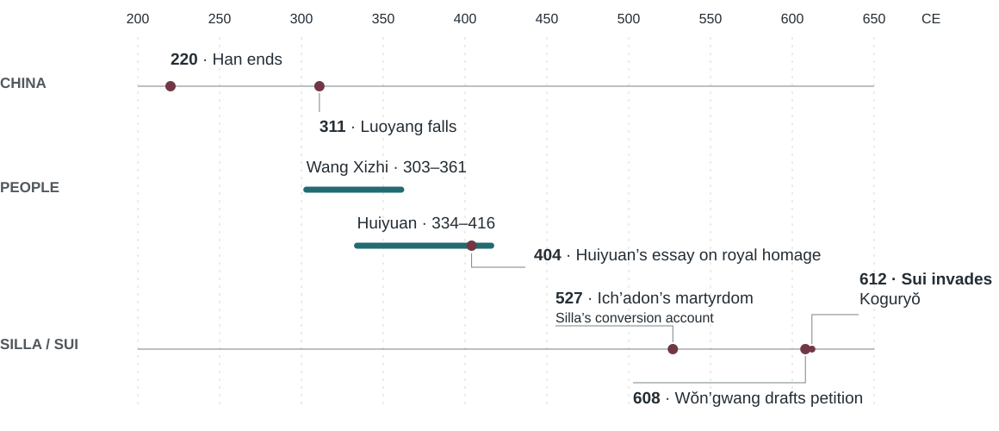
Open full-size timeline · Dates: Ebrey pp. 56–74; SCT pp. 427–429; SKT pp. 41–46; The Met: Wang Xizhi; Academy of Korean Studies: petition and Sui war. Wang’s lifespan follows the museum’s conventional dating. Dates align events; the lines do not imply causation.
“In a rough and tumultuous age, Buddhism offered an appealing emphasis on kindness, charity, the preservation of life, and the prospect of salvation.”
Ebrey & Walthall, Pre-Modern East Asia, p. 70.
Another development in the same world: Wang Xizhi represents elite calligraphic culture in Eastern Jin China. The letter makes writing a personal artistic practice as well as a means of record-keeping. Calligraphy’s cultural role. His place here is a comparison within the period, not an illustration of Buddhist doctrine.
Wang Xizhi was an Eastern Jin official and calligrapher. Timely Clearing after Snowfall survives as a Tang tracing copy; no autograph originals survive.
Wang’s letter is the large dark writing on the right-hand leaf. The small writing above and on the facing leaf is later commentary; the red marks are collectors’ seals.
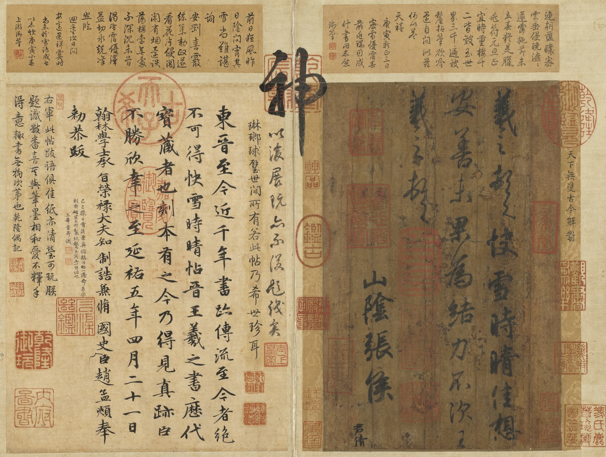
1 · 快2 · 雪3 · 時4 · 晴快雪時晴 · Kuài xuě shí qíng
“Clearing after sudden snow.”
The four outlined brush forms read downward: 1 快 → 2 雪 → 3 時 → 4 晴. Match each number to the printed character beside it.
Running script · xíngshū 行書: variable strokes and connected movement. The type beside it is modern sans-serif.
The National Palace Museum, Taipei · Object record and open-image terms · CC BY 4.0. Enlarged letter detail shown above; the full image remains intact.
Later modelbook rubbing retained as an additional reference.
A teaching about suffering also creates communities, practices, and objects of devotion.
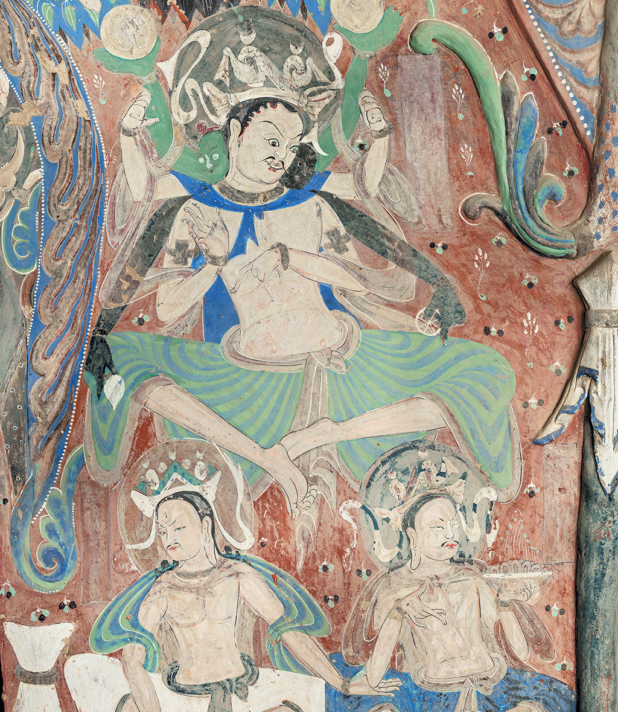
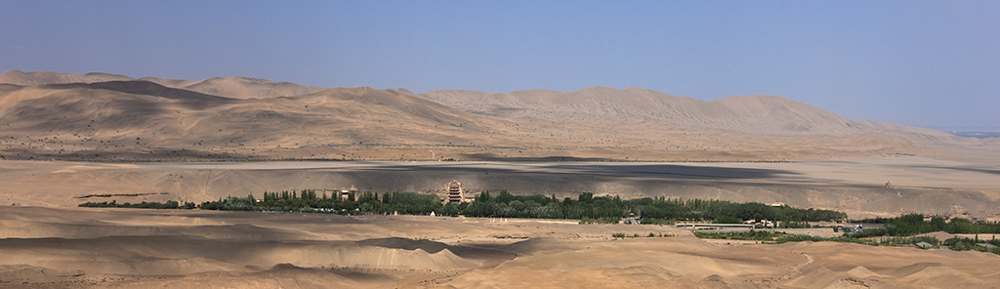
At an oasis on the Silk Road, Buddhist worship takes architectural form: caves cut into cliffs, painted walls, sculptures, and spaces for meditation.
Cave 285 belongs to the divided China on our timeline. Its paintings bring Buddhist figures together with Indian deities and Chinese mythological figures. Religious transmission produces new combinations of images as well as translated texts.
The cave’s inscriptions date it to 538–539. Its wider painted program includes Fuxi and Nüwa; the photograph at left is one detail, not the whole program.
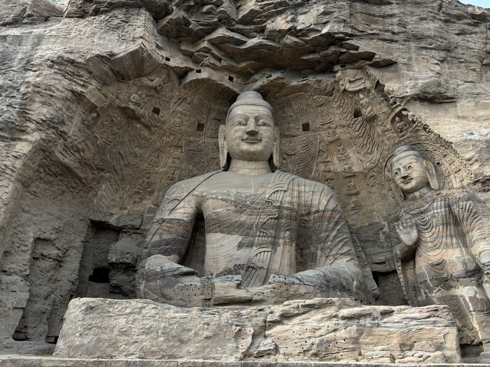
Imperial patronage makes the Buddha monumental. Compare this royal sponsorship with Huiyuan’s refusal of royal homage.
Photo: Thebrainchamber1 / thebrainchamber.com · CC BY-SA 4.0 · resized · Enlarge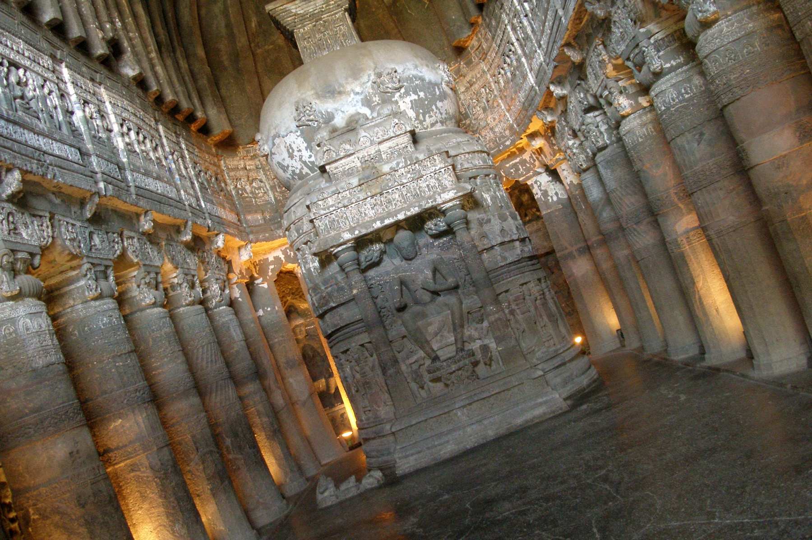
A rock-cut worship hall: pillars surround the stupa, a sacred Buddhist monument. The site began centuries earlier.
Photo: Vyacheslav Argenberg · CC BY 4.0 · resized · Enlarge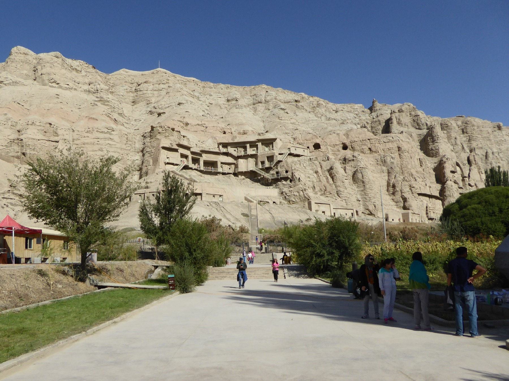
Cliffside monasteries in present-day Xinjiang. See a 6th–7th-century mural fragment from this community.
Photo: Hiroki Ogawa · CC BY 3.0 · resized · Enlarge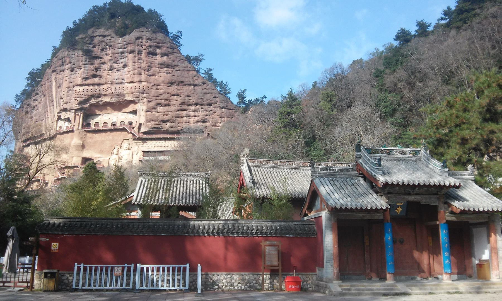
Caves cut into a steep cliff; modeled clay sculpture is a major local tradition. Walkways shown are modern.
Photo: Tgasrio · CC0 · resized · Enlarge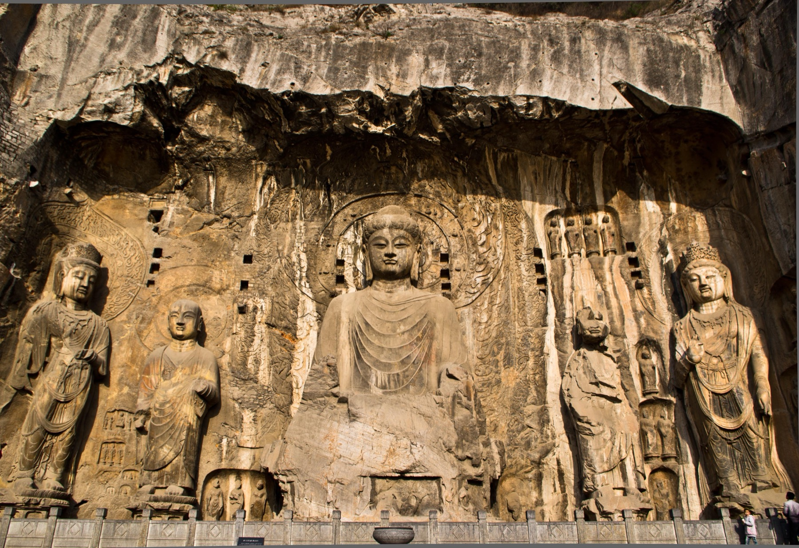
The site began under the Northern Wei. This later Vairocana Buddha and attendants preview Tang imperial Buddhism.
Photo: Shenshi0603 · CC BY-SA 4.0 · resized · EnlargeBuddhism is a religious tradition originating in India, centered on the Buddha’s awakening and teachings. Siddhartha Gautama is the historical Buddha; “Buddha” means an awakened one. Lay followers support and practice the teachings; monks and nuns leave household life for a disciplined religious community. Introduction and source context · SCT 416–420.
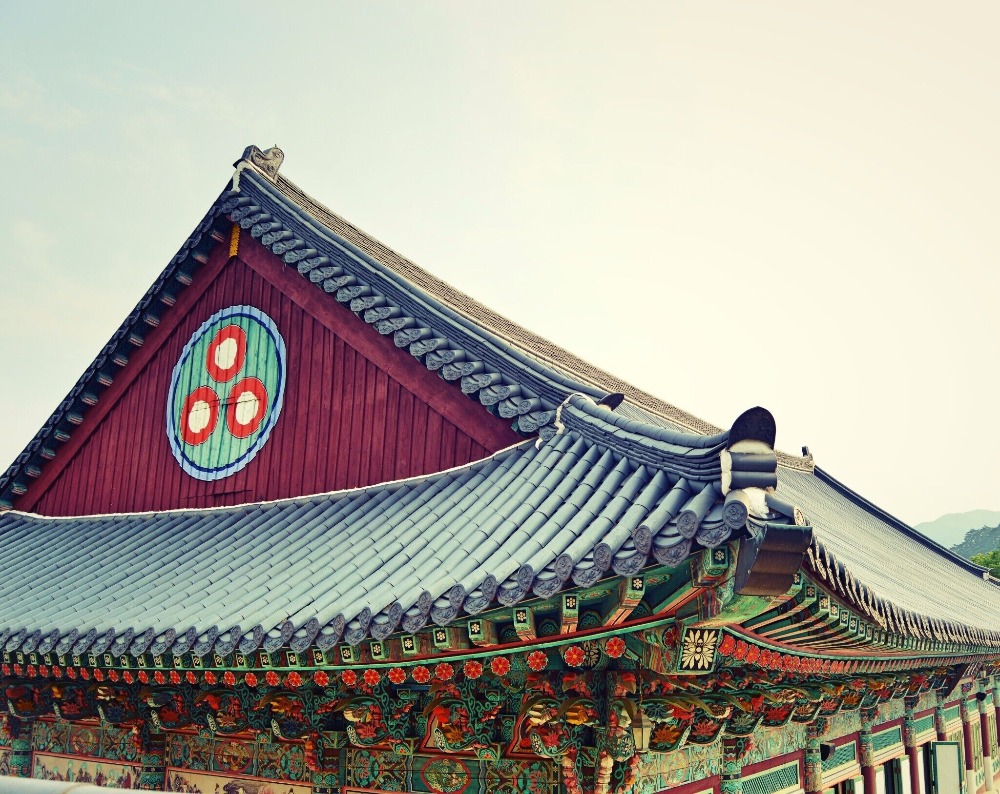
Buddha · the awakened teacher
Dharma · the teaching
Sangha · the community
The three circles on the gable represent these three refuges together.
Photograph supplied for this class; photographer and temple not identified. Symbol: Jogye Order, Buddhist Thought of Korea: Samboryun · Enlarge.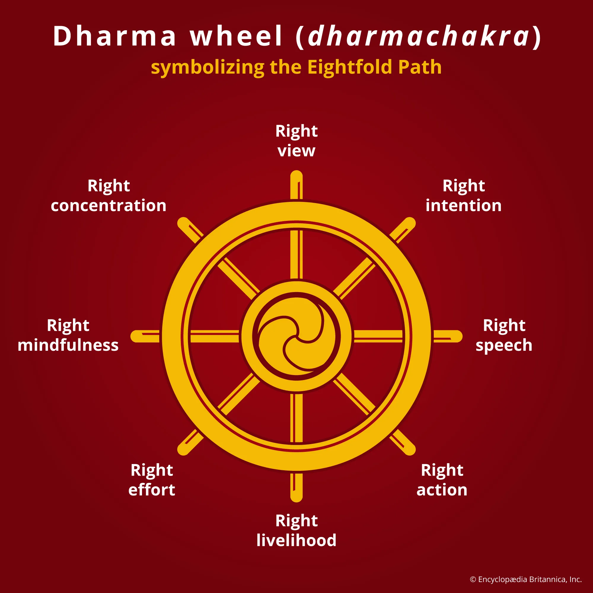
The wheel represents the Dharma. Its eight spokes represent the practices of the fourth Noble Truth.
Graphic © Encyclopædia Britannica, Inc.; supplied for this class. Britannica: Eightfold Path · SN 56.11 · Enlarge.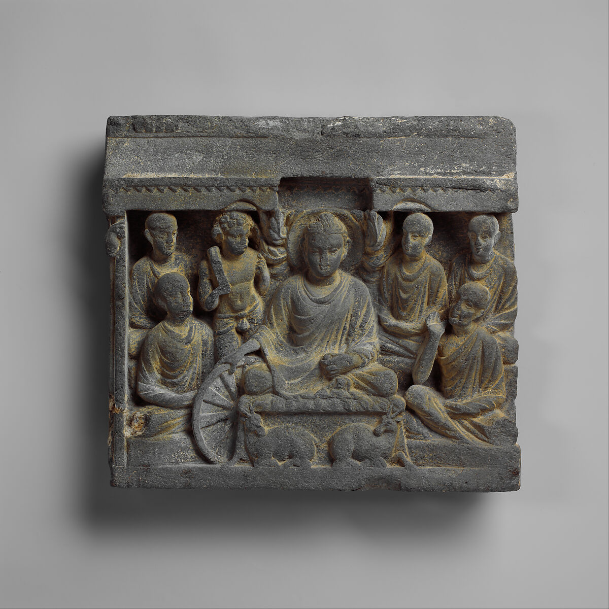
The standing figure beside the Buddha is Vajrapani, a protector; he is not one of the monks.
Teaching summary: SN 56.11 · The Three Refuges · SCT, pp. 416–420.
Existing Four Noble Truths infographic — Ben Lilagan, Dharma by Design
Text outline: Three Jewels, Four Truths and Eightfold Path
Mahāyāna (“Great Vehicle”) gives special importance to the bodhisattva’s pursuit of awakening for the benefit of all beings. This helps explain why Buddhist devotion includes figures such as Maitreya, not only the historical Buddha. SCT 419–420.
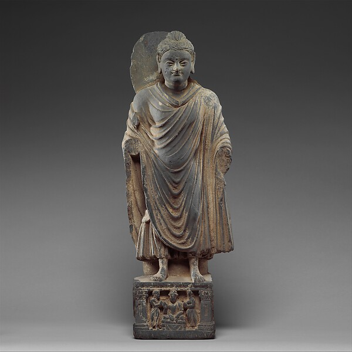
An awakened one. This image wears a monastic robe.
Standing Buddha, ca. 3rd–4th century · The Met, 67.154.5. Public domain.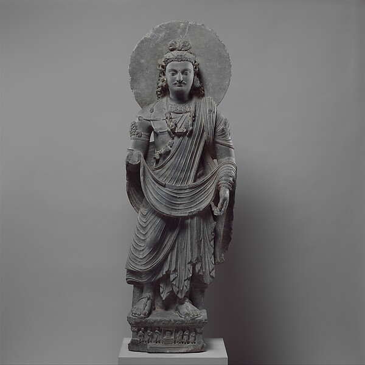
This image wears jewelry and princely dress. Maitreya is the Buddha of the future.
Standing Bodhisattva Maitreya, ca. 3rd century · The Met, 1991.75. Public domain.What transmission produced: Buddhist images became objects of devotion in Korea. This seventh-century sculpture, and its Japanese comparison, give material evidence for a religious culture shared across political borders.
The three-peaked crown and bare upper body distinguish this sculpture from National Treasure 78. It is displayed in the museum’s Room of Quiet Contemplation.
Pensive bodhisattvas are often associated with Maitreya, the future Buddha, called Mireuk in Korean. The museum notes a close comparison with the wooden pensive image at Kōryūji in Japan.
Museum collection record · Museum’s historical comparison
The collection record gives the Three Kingdoms period; a specific kingdom or original temple is not established here.
Mouzi argues for acceptance; Huiyuan argues that monastic life deserves a distinct ritual status.
The problem is belonging: shaving the head and remaining celibate challenge filial obligations. Mouzi answers with figures his opponents already respect. The defense works by interpreting Chinese tradition, not simply rejecting it.
The voice of a dialogue defending Buddhism against objections about the Classics, family duties, and foreign origins. The text presents a late-Han setting; its authorship and date remain debated.
Mouzi 牟子 is not Mozi 墨子, the earlier thinker studied in this course. Text and attribution.
Filial piety · xiào 孝: duties to parents and ancestors. Leaving the household · chūjiā 出家: becoming a monk or nun changes family obligations.
“But now the monks shave their heads. How this violates the sayings of the sages and is out of keeping with the way of the filial!”
SCT p. 423. Oct 13 reader · p. 3
“Taibo cut his hair short and tattooed his body ... And yet Confucius praised him, saying that his might well be called the ultimate virtue.”
SCT p. 423. Oct 13 reader · p. 3
“Now of felicities there is none greater than the continuation of one’s line, of unfilial conduct there is none worse than childlessness.”
SCT pp. 423–424. Oct 13 reader · p. 3
“Boyi and Shuqi starved in Shouyang, but Confucius praised their worth. ... One does not hear of their being ill-spoken of because they were childless and propertyless.”
SCT p. 424. Oct 13 reader · p. 3
“The spirit never perishes. Only the body decays.”
SCT p. 424 · compare the editors on p. 416: no eternal Self or soul. Oct 13 reader · p. 3
PRO: reasons to engage with foreign people, teachings, or practices. CON: reasons to resist. The sources address different actions: living among foreigners, learning from them, and adopting their dress.
“If a noble person dwells in their midst, what rudeness can there be among them?”
SCT p. 425; Analects 9.14, quoted by Mouzi. October 13 reader
“The barbarians with a ruler are not so good as the Chinese without one.”
SCT p. 425; Analects 3.5, quoted by the questioner. October 13 reader
Mouzi invokes Confucius’s proposed residence among the “nine barbarian nations.” This supports living among outsiders; it does not itself say that all customs are equally good. The CON quotation follows the assigned translation of a disputed Analects passage.
“What accords with rightness is to be followed, what heals the sick is good. The gentleman-scholar draws widely on all forms of good and thereby benefits his character.”
SCT pp. 421–422. October 13 reader
“I have heard of using what is Chinese to change what is barbarian, but I have never heard of using what is barbarian to change what is Chinese.”
SCT p. 425; Mengzi 3A4, quoted by the questioner. October 13 reader
“Clothes exist to be useful and manners respond to conditions.”
“The King of Zhao Convinces His Uncle to Wear Barbarian Dress,” Ebrey & Walthall, p. 25; trans. J. I. Crump, modified.
“But now the king would discard all this and wear the habit of foreign regions.”
Same passage, Ebrey & Walthall, p. 25.
The king connects Hu dress with mounted archery and border defense. His uncle initially treats the change as abandoning inherited civilization, then accepts the king’s argument.
The institutional consequence: a monastery is a community with obligations distinct from the household. Huiyuan defends monks’ exemption from royal homage while affirming lay followers’ duties to parents and rulers. This is a claim about religious and ritual status, not modern separation of religion and state.
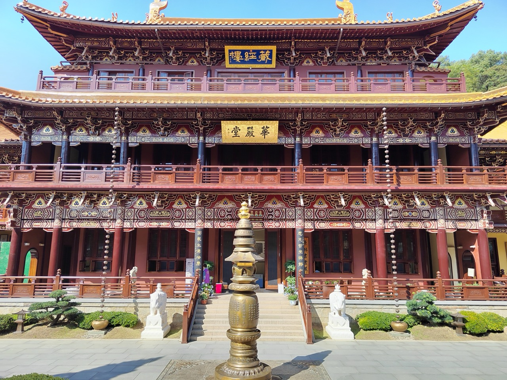
334–416 · Mount Lu, southern China
A monk and community leader at Donglin Temple. His A Monk Does Not Bow Down Before a King dates to 404, during the controversy over Huan Xuan’s demand for monastic obeisance.
His distinction: householders follow ordinary family and political duties; monastics serve a religious purpose that warrants a different ritual status.
Biographical background · SCT pp. 427–429.
“Therefore they who rejoice in the way of Śākya invariably first serve their parents and respect their lords.”
SCT p. 427. Oct 13 reader · p. 4
“Kings and princes, though they have the power of preserving existence, cannot cause a preserved creature to be without woe. ... This is why the monk refuses homage to the Lord of the Myriad Chariots”
SCT pp. 428–429. Oct 13 reader · p. 4
Buddhism can serve kingship as well as limit its claims. Silla’s sources make that tension concrete.
A different political setting: Silla is one of three competing Korean kingdoms. In this conversion narrative, Pŏphŭng seeks royal support for Buddhism while ministers resist. Ich’adon’s death legitimizes the king’s religious policy within the story. Ebrey 103–105; SKT 41–44.
The king associated with Silla’s official acceptance of Buddhism. The reading calls him Pŏpkong, his monastic name.
The court official whose execution and miraculous death mark the conversion account, dated 527.
The account survives in Kakhun’s Lives of Eminent Korean Monks (1215). Miracles are the narrative’s claims.
“In recent years the crops have been scarce, and the people are restless. Besides, because of frequent border raids from the neighboring state, our soldiers are still engaged in battle.”
SKT pp. 41–42. Oct 13 reader · p. 6
“Sacrificing his life in order to accomplish goodness is the great principle of the official.”
SKT p. 42. Oct 13 reader · p. 6
걸사표 乞師表
Requested by: King Chinp’yŏng of Silla.
Addressed to: the Sui court.
Purpose: military help against Koguryŏ.
The petition’s original wording does not survive. The passage below records the monk’s reply to his king, not the text sent to Sui.
Academy of Korean Studies: petition, dates, and lost text · Samguk sagi: the 608 entry.
Read Wŏn’gwang’s reply and lay commandments beside Laozi below ↓
“Weapons are inauspicious instruments, not the instruments of a cultivated person. But if given no other choice, the cultivated person will use them.”
Laozi 31, trans. Philip J. Ivanhoe, Readings in Classical Chinese Philosophy, 3rd ed., p. 187.
“To destroy others in order to preserve oneself is not the way of a monk. But since I, a poor monk, live in Your Majesty’s territory and waste Your Majesty’s clothes and food, I dare not disobey.”
SKT p. 45. Oct 13 reader · p. 7
Laozi allows the use of weapons when there is no other choice. Wŏn’gwang says destruction violates a monk’s way, but agrees to serve the king who sustains him.
“A military victory is not a thing of beauty. To beautify victory is to delight in the slaughter of human beings. ... When great numbers of people have been killed, one weeps for them in grief and sorrow. Military victory is associated with the rites of mourning.”
Laozi 31, trans. Philip J. Ivanhoe, p. 187.
“serve your sovereign with loyalty; attend your parents with filial piety; treat your friends with sincerity; do not retreat from a battlefield; be discriminating about the taking of life.”
SKT pp. 45–46. Oct 13 reader · p. 7
Even victory does not justify delight in killing. Laozi prescribes grief and mourning. Wŏn’gwang’s lay precepts combine battlefield loyalty with restraint in taking life; they do not prescribe withdrawal from war.
The first Laozi excerpt restores lines from the full assigned source that the compact reading omitted. The English quotations above retain Ivanhoe’s translation.
Seasonal restrictions on killing already appear in Warring States Chinese texts. They precede Buddhism’s establishment in China. Wŏn’gwang’s rule combines a spring–summer restriction with Buddhist fasting days.
“Nests should not be thrown down; unformed insects should not be killed, nor creatures in the Womb, nor very young creatures”
Liji (Book of Rites), “Yue Ling” (Monthly Ordinances), §10; trans. James Legge. Read the source
“Not to kill during the months of spring and summer nor during the six meatless feast days is to choose the time.”
SKT p. 46. October 13 reader · p. 7
Wangzhi (“The Regulations of a King”), chapter 9, bars nets and poisons from marshes while aquatic animals breed. It explicitly protects their growth and links seasonal restraint to plentiful resources.
Primary text · §22 · summary, not a quotation.
The first spring month’s ordinances prohibit destroying nests and killing unborn or young creatures. Fawns and eggs are protected too. Closely parallel wording appears in the Liji.
Text and parallel passages · Compilation date. Summary.
The reported teaching adds six Buddhist observance days to the seasonal rule. It also selects which creatures may be killed and discourages killing often.
SKT p. 46 · Samguk yusa translation, pp. 473–474, note 22. Summary.
The distinction: earlier Chinese rules protect reproduction and regulate taking animal life by season; Buddhist precepts supply a broader objection to killing. The resemblance is clear. Direct borrowing by Wŏn’gwang from a particular Chinese text is not established by these passages.
“Birthing season” is an explanation of the seasonal logic, not Wŏn’gwang’s wording in the assigned translation. His text says “spring and summer.” The account is preserved in later compilations, not a surviving contemporary transcript.
A rule against killing does not always mean a rule against eating meat. Chinese Buddhist vegetarianism developed through debates about compassion, monastic discipline, and the authority to set religious rules.
Compare the scope: seasonal restraint limits when killing occurs; the early Buddhist permission concerns who caused the killing; the Fanwang Sutra restricts eating meat itself. Wŏn’gwang’s rules for laypeople combine loyalty and selective restraint. These positions overlap; they are not stages that every Buddhist community passed through.
Course synthesis; source links above. The Liang debates belong to the early sixth century. Their exact dating is disputed, so no single year is assigned here. Emperor Wu adds another contrast with Huiyuan: a ruler attempts to determine monastic conduct.
Buddhism becomes part of how East Asian societies organize authority and connect with one another.
The sixth-century cave is part of Tuesday’s world. These later works show what sustained Buddhist patronage and the circulation of texts will produce under the Tang.
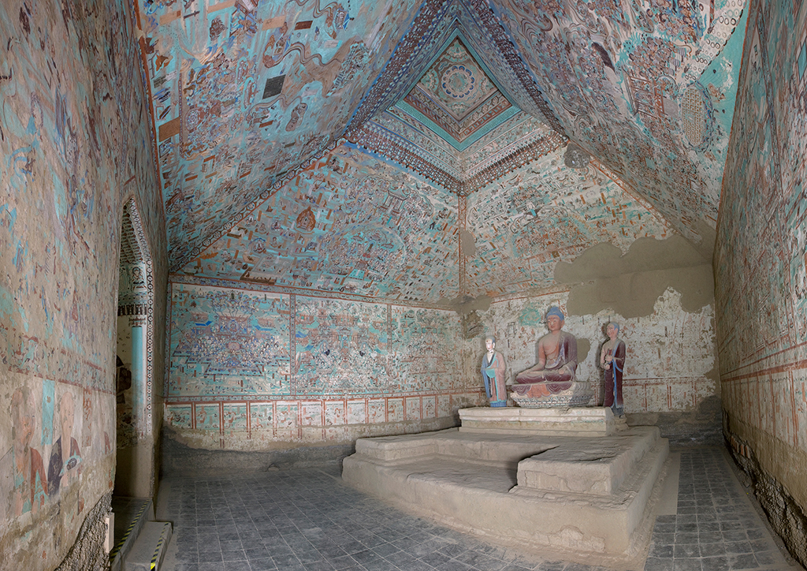
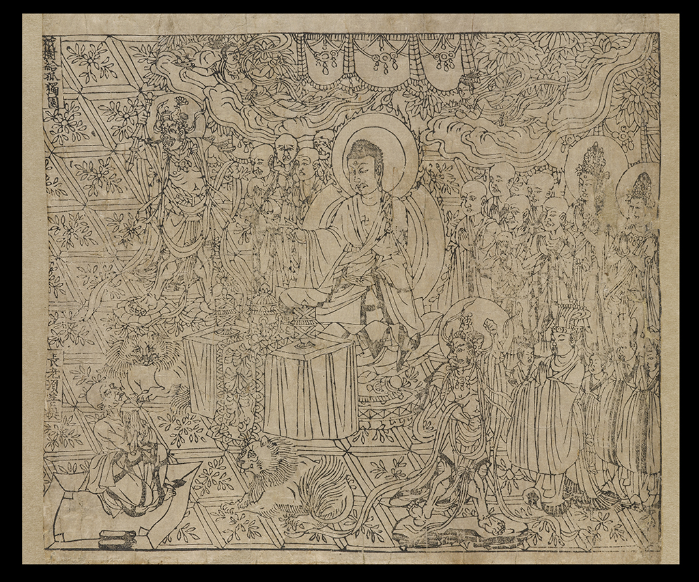
The larger story: Buddhism connects patrons, artisans, monasteries, and readers. A religious teaching becomes a lasting part of East Asia’s material and intellectual culture.
“in China the governments successfully claimed the authority to regulate Buddhist clergy and monastic establishments.”
Ebrey & Walthall, Pre-Modern East Asia, p. 72.
Imperial reunification will operate in a world already transformed by Buddhist institutions. Chajang’s work in Silla—monastic regulation and court adoption of Chinese practices—connects today’s readings to the next class on adapting continental models. SKT 46–48; October 15 reader.
The Fo position must explain what religious practice contributes to the realm and what it may refuse the ruler. Mouzi, Huiyuan, and Wŏn’gwang supply different arguments—not one unanimous Buddhist policy. Great Debate guide.